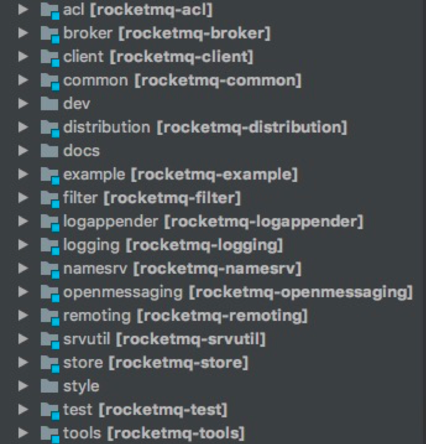
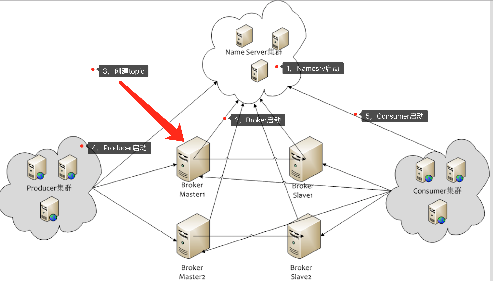

为什么读RocketMQ
- 消息队列在互联网应用中使用较为广泛，学习她可以让我门更加了解使用技术的工作原理
- 透过学习她的源码，拓宽认知
- RocketMQ经历了阿里双十一
名词
- Producer 消息生产者，负责产生消息
- Consumer 消息消费者，负责消费消息
- Producer Group 一类 Producer 的集合名称，这类 Producer 通常发送一类消息，且发送逻辑一致
- Consumer Group 一类 Consumer 的集合名称，这类 Consumer 通常消费一类消息，且消费逻辑一致
- Push Consumer Consumer 的一种，应用通常向 Consumer 对象注册一个 Listener 接口，一旦收到消息，Consumer 对象立 刻回调 Listener 接口方法。(主动向Consumer推送消息)
- Pull Consumer Consumer 的一种，应用通常主动调用 Consumer 的拉消息方法从 Broker 拉消息，主动权由应用控制。（由Consumer拉取消息）
- Broker 消息中转角色，负责存储消息，转发消息
- NameServer 负责监听和管理生产者、消费者、Broker的注册中心
- Topic 消息主题，一级消息类型，通过 Topic 对消息进行分类
- Tag 消息标签，二级消息类型，用来进一步区分某个 Topic 下的消息分类
- 集群消费 一个 Group ID 所标识的所有 Consumer 平均分摊消费消息。例如某个 Topic 有 9 条消息，一个 Group ID 有 3 个 Consumer 实例，那么在集群消费模式下每个实例平均分摊，只消费其中的 3 条消息。
- 广播消费 一个 Group ID 所标识的所有 Consumer 都会各自消费某条消息一次。例如某个 Topic 有 9 条消息，一个 Group ID 有 3 个 Consumer 实例，那么在广播消费模式下每个实例都会各自消费 9 条消息。
- 顺序消息 消费消息的顺序要同发送消息的顺序一致，在 RocketMQ 中，主要指的是局部顺序，即一类消息为满足顺 序性，必须 Producer 单线程顺序发送，且发送到同一个队列，这样 Consumer 就可以按照 Producer 发送 的顺序去消费消息。
- 普通顺序消息 顺序消息的一种，正常情况下可以保证完全的顺序消息，但是一旦发生通信异常，Broker 重启，由于队列 总数发生变化，哈希取模后定位的队列会变化，产生短暂的消息顺序不一致。 如果业务能容忍在集群异常情况（如某个 Broker 宕机或者重启）下，消息短暂的乱序，使用普通顺序方 式比较合适。
代码模块组成, 模块架构图
项目结构如图

版本为4.5.2
- rocketmq-acl: 权限控制（ACL）主要为RocketMQ提供Topic资源级别的用户访问控制
- rocketmq-broker: 负责转发消息， 接收producer发来的消息并存储，同时consumer来这里拉取消息
- rocketmq-client: 包含了Producer和Consumer，负责消息发送和接收
- rocketmq-common: 通用的常量枚举、基类方法或者数据结构，按描述的目标来分包通俗易懂
- rocketmq-distribution：一些 sh 脚本和 配置，主要是在部署的时候用的
- rocketmq-filter：过滤器，用于服务端 SQL92 的过滤方式
- rocketmq-logappender: 集成log4、log4j2、logback日志
- rocketmq-logging: 提供日志的工厂类和方法
- rocketmq-namesrv: 注册中心，每个 broker 都会在这里注册，client 也会从这里获取 broker 的相关信息
- rocketmq-openmassageing:
- rocketmq-remoting: 用Netty4写的客户端和服务端
- rocketmq-store：存储服务，消息存储，索引存储，commitLog存储
- rocketmq-ools：命令行工具
RocketMQ部署结构图

- NameServer 是一个几乎无状态节点，可集群部署，节点之间无任何信息同步。
- Broker 部署相对复杂，Broker 分为 Master 与 Slave，一个 Master 可以对应多个 Slave，但是一个 Slave 只能 对应一个 Master，Master 与 Slave 的对应关系通过指定相同的 BrokerName，不同的 BrokerId 来定义，BrokerId 为 0 表示 Master，非 0 表示 Slave。Master 也可以部署多个。每个 Broker 与 Name Server 集群中的所有节 点建立长连接，定时注册 Topic 信息到所有 Name Server。
- Producer 与 Name Server 集群中的其中一个节点（随机选择）建立长连接，定期从 Name Server 取 Topic 路 由信息，并向提供 Topic 服务的 Master 建立长连接，且定时向 Master 发送心跳。Producer 完全无状态，可集群部署。
- Consumer 与 Name Server 集群中的其中一个节点（随机选择）建立长连接，定期从 Name Server 取 Topic 路由信息，并向提供 Topic 服务的 Master、Slave 建立长连接，且定时向 Master、Slave 发送心跳。Consumer 既可以从 Master 订阅消息，也可以从 Slave 订阅消息，订阅规则由 Broker 配置决定。